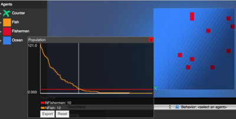
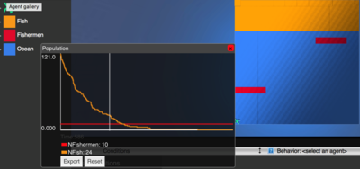
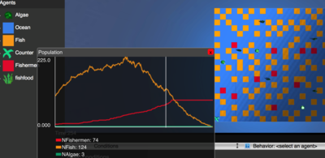
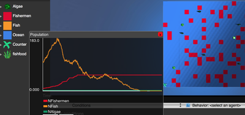
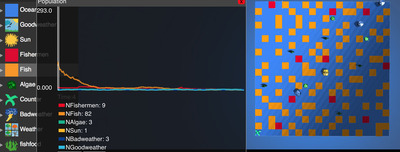
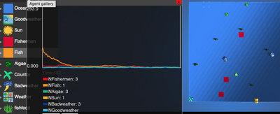

Required Software
To open and use these agent models, you only need to click on the line below: "view model page". You do not need an account to be able to use these models.
Each model links to a page with three options: Play, Design, and Edit. To start the model, click play. After you click play, the model will automatically start and run until it finishes. You can click the back arrow at the top of the screen to get back to the Play, Design, Edit page.
Model 1: Fish and Fishermen Moving Randomly
In this model, fish are represented by orange squares. Fishermen are represented by red squares. The world is represented by blue squares.
Fish and fishermen move randomly in the world. If a fisherman bumps into a fish, there is some percent chance that the fishermen will catch the fish. The model ends when the fishermen have caught all the fish and there are no orange squares left.
If the scales were changed, other aspects of the model would change too. If the world was made bigger, and there were the same number of fish and fishermen, it would take longer for the fishermen to catch all of the fish because it is less likely that they will bump into each other. In the same way, if the world was made smaller, it would take less time for the fishermen to catch all of the fish because in the model they would be more likely to bump into each other. If there were more fish, it would take longer for the fishermen to catch all of the fish, just because there are more of them. If there were less fish, it would take less time for the fishermen to catch them all.
View model page  Model 2: Fish and Fishermen Moving Randomly
Fish are represented by orange squares, the fishermen are represented by red squares, the algae is represented by green algae shapes, and the world is represented by blue squares.
Fish, fishermen, and algae move randomly in the world. If a fisherman bumps into a fish, then there is some percent chance of him catching it. If an algae bumps into a fish, then there is some percent chance of it killing the fish. In this model, if the fisherman catches the fish, then the fish turns into a fisherman and if the algae kills the fish, then the fish's square will disappear.
If the scale of the model was changed, specific aspects of it would change too. If the world was made bigger, the fish would disapear, by either getting caught or killed, slower because there would be more space and that would make it less likely for fish to bump into fishermen or algae. If the world were made smaller, the fish would disappear much faster. If there were more fish, it would take longer for all of the fish to disappear. If there were more fishermen or more algae, the fish would disappear much faster.
View model page  Model 3: Fish, Fishermen, and Algae Moving Randomly
Fish are represented by orange squares, the fishermen are represented by red squares, the algae is represented by green algae shapes, and the world is represented by blue squares.
Fish, fishermen, and algae move randomly in the world. If a fisherman bumps into a fish, then there is some percent chance of him catching it. If an algae bumps into a fish, then there is some percent chance of it killing the fish. In this model, if the fisherman catches the fish, then the fish turns into a fisherman and if the algae kills the fish, then the fish's square will disappear. Some squares are good weather and some squares are bad weather. If a fisherman sees a bad weather square he will move away.
If the scale of the model was changed, specific aspects of it would change too. If the world was made bigger, the fish would disappear, either get caught ot killed, slower because there would be more space and that would make it less likely for fish to bump into fishermen or algae. If the world were made smaller, the fish would disappear much faster. If there were more fish, it would take longer for all of the fish to disappear. If there were more fishermen or more algae, the fish would disappear much faster.
View model page  